library(gsheet)
library(readxl)
library(ggtext)
library(tidyverse)
library(ggthemes)
library(grid)
library(gridExtra)
library(patchwork)
library(car)
library(rms)
library(scales)
library(caret)
# tidyfun is currently not on CRAN. You can install the development version from GitHub with:
# # install.packages("pak")
#pak::pak("tidyfun/tidyfun")
library(tidyfun)
# Kaique dos S. Alves modifications to the geom-spaghetti function (updated ggplot linewidth instead of size):
source(here::here("geom-spaghetti.R"))Figures
Figures
Here is the code for all figures of the paper.
Libraries:
Geom-spaghetti.R source: https://doi.org/10.17605/OSF.IO/V53PY
Data
data <- read_xlsx("plan/weather_data_final.xlsx")
data_nasa <- read_csv("plan/weather_data_nasa.csv")
data <- data %>%
filter(!study %in% 126:150)
data_nasa <- data_nasa %>%
filter(!study %in% 126:150)Figure 1:
itp.curves <- function(data, variable, sig_days = NULL, .ylab = NULL) {
var_sym <- rlang::enquo(variable)
p <- suppressMessages(
data %>%
dplyr::select(study, days, epidemic, !!var_sym) %>%
tf_nest(!!var_sym, .id = study, .arg = days) %>%
dplyr::group_by(epidemic) %>%
dplyr::summarize(var_mean = mean(!!var_sym)) %>%
dplyr::mutate(smooth_mean = tfb(var_mean)) %>%
ggplot(aes(tf = smooth_mean, color = factor(epidemic))) +
geom_spaghetti(linewidth = 2, alpha = 1) +
scale_x_continuous(breaks = seq(-28, 28, by = 4)) +
geom_vline(xintercept = 0, color = "gray", linetype = "dashed") +
ggthemes::scale_color_excel_new(labels = c("Non-epidemic", "Epidemic")) +
theme_bw() +
labs(x = "Days relative to event",
y = .ylab,
color = "Epidemic status") +
theme(axis.title.y = element_text(size = 12),
axis.title.x = element_text(size = 12),
axis.text.x = element_text(size = 9),
axis.text.y = element_text(size = 9),
legend.position = "bottom")
)
# Adiciona o sombreado dos dias significativos (se houver)
if (!is.null(sig_days)) {
for (d in sig_days) {
p <- p + annotate("rect", xmin = d - 0.5, xmax = d + 0.5, ymin = -Inf, ymax = Inf,
fill = "gray40", alpha = 0.3)
}
}
return(p)
}itp_rh <- c(5, 6, 7, 8, 9, 10)
rh_curves <- itp.curves(data, RH2M, sig_days = itp_rh, .ylab = "Relative humidity (%)")itp_tmin <- 2:10
tmin_curves <- itp.curves(data, T2M_MIN, sig_days = itp_tmin, .ylab = "Min Temperature (°C)")itp_tdew <- 4:10
tdew_curves <- itp.curves(data_nasa, T2MDEW, sig_days = itp_tdew, .ylab = "Dew point (°C)")itp_prec <- 6:10
prec_curves <- itp.curves(data_nasa, PRECTOTCORR, sig_days = itp_prec, .ylab = "Precipitation (mm)")boxplots
df_predictors <- read_xlsx("plan/df_predictors.xlsx")p_tmin1 <- df_predictors |>
ggplot(aes(factor(epidemic), tmin, color = factor(epidemic))) +
geom_boxplot(fill = NA, linewidth = 0.9) + # fill = NA para não colorir interior
labs(y = "Tmin<sub>2_10</sub> (°C)", x = "Epidemic") +
ggthemes::scale_color_excel_new(labels = c("Non-epidemic", "Epidemic")) +
theme_bw()+
theme(
axis.title.y = element_markdown(size = 12), # habilita Markdown no eixo Y
axis.title.x = element_text(size = 12),
legend.position = "none", # opcional
axis.text.x = element_text(size = 9),
axis.text.y = element_text(size = 9)
)
p_dew1 <- df_predictors |>
ggplot(aes(factor(epidemic), dew, color = factor(epidemic)))+
geom_boxplot(fill = NA, linewidth = 0.9) +
labs(y = "Tdew<sub>4_10</sub> (°C)", x = "Epidemic")+
ggthemes::scale_color_excel_new(labels = c("Non-epidemic", "Epidemic")) +
theme_bw()+
theme(
axis.title.y = element_markdown(size = 12), # enable Markdown in Y-axis label
axis.title.x = element_text(size = 12),
legend.position = "none",
axis.text.x = element_text(size = 9),
axis.text.y = element_text(size = 9)
)
p_rh1 <- df_predictors |>
ggplot(aes(factor(epidemic), rh, color = factor(epidemic)))+
geom_boxplot(fill = NA, linewidth = 0.9)+
labs(x = "Epidemic", y = "RH<sub>5_10</sub> (%)")+
ggthemes::scale_color_excel_new(labels = c("Non-epidemic", "Epidemic")) +
theme_bw()+
theme(
axis.title.y = element_markdown(size = 12), # enable Markdown in Y-axis label
axis.title.x = element_text(size = 12),
legend.position = "none",
axis.text.x = element_text(size = 9),
axis.text.y = element_text(size = 9)
)
p_prec1 <- df_predictors |>
ggplot(aes(factor(epidemic), prec2, color = factor(epidemic)))+
geom_boxplot(fill = NA, linewidth = 0.9)+
ggthemes::scale_color_excel_new(labels = c("Non-epidemic", "Epidemic")) +
theme_bw()+
labs(x = "Epidemic", y = "PREC<sub>6_10</sub> (mm)")+
theme(
axis.title.y = element_markdown(size = 12), # enable Markdown in Y-axis label
axis.title.x = element_text(size = 12),
legend.position = "none",
axis.text.x = element_text(size = 9),
axis.text.y = element_text(size = 9)
)(tmin_curves | p_tmin1) /
(rh_curves | p_rh1) /
(tdew_curves | p_dew1) /
(prec_curves | p_prec1) +
plot_layout(guides = "collect") & # coleta todas as legendas em uma só
theme(legend.position = "bottom") & # define a posição da legenda
plot_annotation(tag_levels = "A")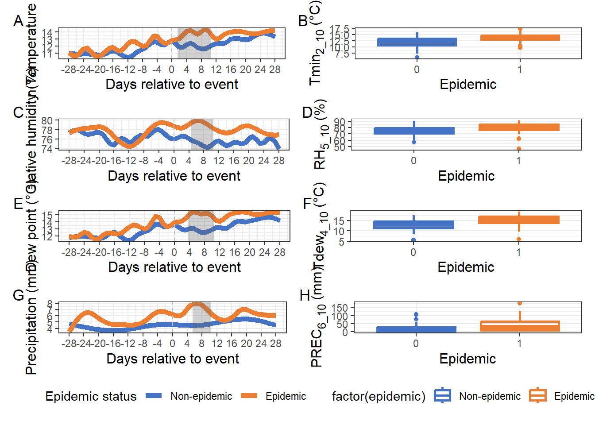
Figure 2:
models <- list(
model1 = lrm(factor(epidemic) ~ tmin + rcs(rh, 4), data = df_predictors, x = TRUE, y = TRUE),
model2 = lrm(factor(epidemic) ~ rcs(rh, 4) + rcs(dew, 3), data = df_predictors, x = TRUE, y = TRUE),
model3 = lrm(factor(epidemic) ~ tmin + prec2, data = df_predictors, x = TRUE, y = TRUE)
)
# Predicted probabilities
p1 <- predict(models$model1, type = "fitted")
p2 <- predict(models$model2, type = "fitted")
p3 <- predict(models$model3, type = "fitted")
# Real
actual <- df_predictors$epidemic
# # Ensembles
ensemble_unw <- (p1 + p2 + p3) / 3
stack_data <- data.frame(p1 = p1, p2 = p2, p3 = p3, epidemic = factor(df_predictors$epidemic))
meta_model <- glm(epidemic ~ p1 + p2 + p3, data = stack_data, family = binomial)
ensemble_stack <- predict(meta_model, type = "response")# Hard vote
# Cut-points para classificação binária
cut_p1 <- 0.530
cut_p2 <- 0.51
cut_p3 <- 0.460
# Classificações binárias
class_p1 <- ifelse(p1 >= cut_p1, 1, 0)
class_p2 <- ifelse(p2 >= cut_p2, 1, 0)
class_p3 <- ifelse(p3 >= cut_p3, 1, 0)
# Função votação majoritária
hard_vote <- function(...) {
votes <- c(...)
if (sum(votes) >= ceiling(length(votes)/2)) {
return(1)
} else {
return(0)
}
}
# Aplica a votação majoritária para cada observação
ensemble_hard <- mapply(hard_vote, class_p1, class_p2, class_p3)#-----------------------------------------------------
# Function to compute evaluation metrics for a model
#-----------------------------------------------------
evaluate_model <- function(probs, threshold = 0.5, name = "model", type = "base") {
pred <- ifelse(probs >= threshold, 1, 0)
cm <- confusionMatrix(factor(pred), reference = as.factor(actual), positive = "1")
data.frame(
Model = name,
Type = type,
Accuracy = cm$overall["Accuracy"],
Sensitivity = cm$byClass["Sensitivity"],
Specificity = cm$byClass["Specificity"]
)
}
#-------------------------------------------------
# Evaluate all models and bind into a single table
#-------------------------------------------------
eval_df <- rbind(
evaluate_model(p1, 0.53, "LM1", "Base"),
evaluate_model(p2, 0.51, "LM2", "Base"),
evaluate_model(p3, 0.46, "LM3", "Base"),
evaluate_model(ensemble_unw, 0.475, "UNW", "Ensemble"),
evaluate_model(ensemble_hard, 0.5, "HRD", "Ensemble"),
evaluate_model(ensemble_stack, 0.47, "STACK", "Ensemble")
)
# Add Youden index to eval_df and sort
eval_df$Youden <- with(eval_df, Sensitivity + Specificity - 1)
# Factor Model by sorted order for consistent legend
eval_df$Model <- factor(eval_df$Model, levels = eval_df$Model)
eval_df <- eval_df %>%
mutate(
ROC_AUC = case_when(
Model == "LM1" ~ 0.798,
Model == "LM2" ~ 0.792,
Model == "LM3" ~ 0.814,
Model == "UNW" ~ 0.842,
Model == "HRD" ~ 0.811,
Model == "STACK"~ 0.826
),
PR_AUC = case_when(
Model == "LM1" ~ 0.742,
Model == "LM2" ~ 0.754,
Model == "LM3" ~ 0.720,
Model == "UNW" ~ 0.796,
Model == "HRD" ~ 0.758,
Model == "STACK"~ 0.784
))
# View table
print(eval_df) Model Type Accuracy Sensitivity Specificity Youden ROC_AUC
Accuracy LM1 Base 0.776 0.64 0.8666667 0.5066667 0.798
Accuracy1 LM2 Base 0.792 0.64 0.8933333 0.5333333 0.792
Accuracy2 LM3 Base 0.800 0.74 0.8400000 0.5800000 0.814
Accuracy3 UNW Ensemble 0.800 0.70 0.8666667 0.5666667 0.842
Accuracy4 HRD Ensemble 0.816 0.72 0.8800000 0.6000000 0.811
Accuracy5 STACK Ensemble 0.824 0.74 0.8800000 0.6200000 0.826
PR_AUC
Accuracy 0.742
Accuracy1 0.754
Accuracy2 0.720
Accuracy3 0.796
Accuracy4 0.758
Accuracy5 0.784a <- ggplot(eval_df, aes(x = Accuracy, y = Youden, color = Model, shape = Type)) +
geom_point(alpha = 0.8, size = 6) +
scale_shape_manual(values = c(Base = 16, Ensemble = 17)) +
ggthemes::scale_color_excel_new() +
labs(x = "Accuracy", y = "Youden index", size = "AUC") +
theme_bw() +
xlim(0.75, 0.85) +
ylim(0.5, 0.7) +
theme(plot.title = element_text(size = 16, hjust = 0.5),
axis.title.x = element_text(size = 14),
axis.title.y = element_text(size = 14),
legend.position = "bottom") + # coloca a legenda dentro do gráfico (coordenadas normalizadas) )
guides(color = guide_legend(nrow = 1), shape = "none") +# oculta legenda do Type
scale_size_continuous(
limits = c(0.79, 0.835),
range = c(2, 8), # controla o tamanho mínimo e máximo dos pontos
breaks = c(0.80, 0.81, 0.82, 0.83), # define quais valores vão aparecer na legenda
labels = scales::number_format(accuracy = 0.01) # formata os números na legenda
)
b <- ggplot(eval_df, aes(x = Sensitivity , y = Specificity, color = Model, shape = Type)) +
geom_point(alpha = 0.8, size = 6) +
ggthemes::scale_color_excel_new() +
labs(x = "Sensitivity", y = "Specificity", size = "AUC") +
theme_bw() +
xlim(0.6, 0.8) +
ylim(0.825, 0.90) +
theme(plot.title = element_text(size = 16, hjust = 0.5),
axis.title.x = element_text(size = 14),
axis.title.y = element_text(size = 14),
legend.position = "bottom") + # coloca a legenda dentro do gráfico (coordenadas normalizadas) )
guides(color = guide_legend(nrow = 1), shape = "none") +# oculta legenda do Type
scale_size_continuous(
limits = c(0.79, 0.835),
range = c(2, 8), # controla o tamanho mínimo e máximo dos pontos
breaks = c(0.80, 0.81, 0.82, 0.83), # define quais valores vão aparecer na legenda
labels = scales::number_format(accuracy = 0.01) # formata os números na legenda
)
c <- ggplot(eval_df, aes(x = ROC_AUC, y = PR_AUC, color = Model, shape = Type)) +
geom_point(alpha = 0.8, size = 6) +
scale_shape_manual(values = c(Base = 16, Ensemble = 17)) +
ggthemes::scale_color_excel_new() +
labs(x = "ROC_AUC", y = "PR_AUC") +
theme_bw() +
xlim(0.775, 0.85) +
ylim(0.715, 0.80) +
theme(plot.title = element_text(size = 16, hjust = 0.5),
axis.title.x = element_text(size = 14),
axis.title.y = element_text(size = 14),
legend.position = "bottom") + # coloca a legenda dentro do gráfico (coordenadas normalizadas) )
guides(color = guide_legend(nrow = 1), shape = "none") +# oculta legenda do Type
scale_size_continuous(
limits = c(0.79, 0.835),
range = c(2, 8), # controla o tamanho mínimo e máximo dos pontos
breaks = c(0.80, 0.81, 0.82, 0.83), # define quais valores vão aparecer na legenda
labels = scales::number_format(accuracy = 0.01) # formata os números na legenda
)
#a + b + c + guide_area() +
# plot_layout(guides = 'collect')
(a/b/c) +
plot_layout(guides = "collect") &
plot_annotation(tag_levels = "A")&
theme(legend.position = "bottom")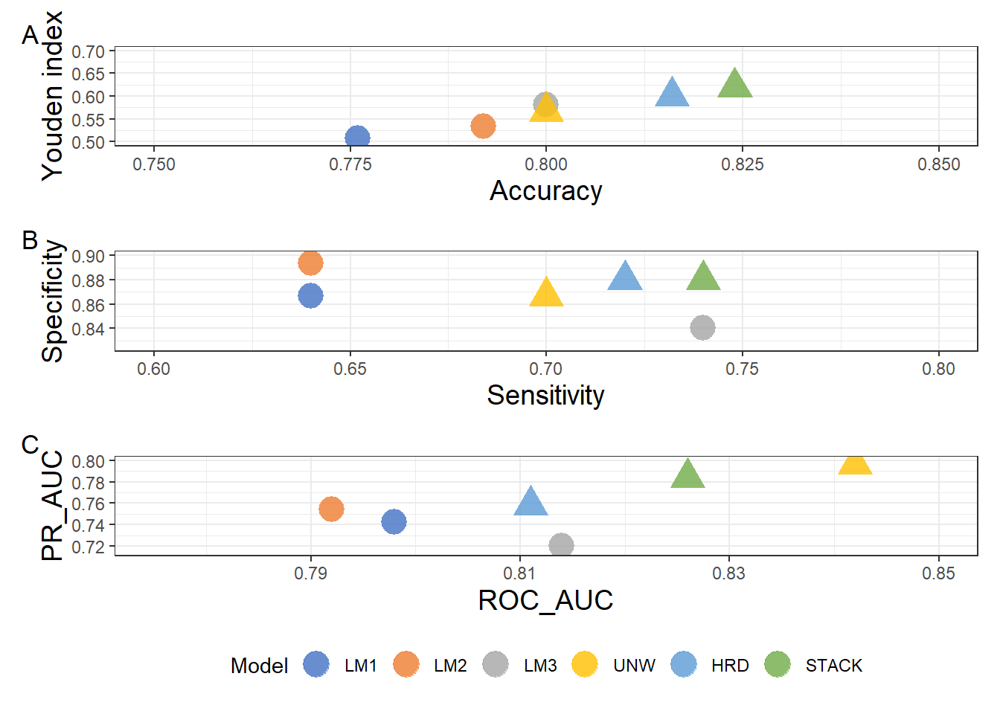
Figure 3:
df_preds <- data.frame(
epidemic = df_predictors$epidemic, # variável resposta observada
LM1 = predict(models$model1, type = "fitted"),
LM2 = predict(models$model2, type = "fitted"),
LM3 = predict(models$model3, type = "fitted"),
UNW = (predict(models$model1, type = "fitted") + predict(models$model2, type = "fitted") + predict(models$model3, type = "fitted")) / 3,
WGT = 0.102 * predict(models$model1, type = "fitted") + 0.43 * predict(models$model2, type = "fitted") + 0.46 * predict(models$model3, type = "fitted"),
STACK = predict(meta_model, type = "response")
)
# 2. Colocar em formato longo
df_long <- df_preds %>%
pivot_longer(
cols = -epidemic,
names_to = "model",
values_to = "prob"
)
df_long <- df_long %>%
mutate(epidemic_f = factor(epidemic, levels = c(0, 1),
labels = c("Non-epidemic", "Epidemic")))
# 3. Histograma das probabilidades previstas
ggplot(df_long, aes(x = prob, fill = factor(epidemic), color = factor(epidemic))) +
geom_histogram(bins = 20, linewidth = 0.8, alpha = 0.8, position = "identity") +
facet_grid(model ~ epidemic_f) +
labs(x = "Model-fitted probability",
y = "Count") +
scale_fill_manual(values = c("0" = "#4970b5", "1" = "#ed7d31"),
labels = c("Non-epidemic", "Epidemic")) +
scale_color_manual(values = c("0" = "#4970b5", "1" = "#ed7d31")) +
theme_bw() +
theme(
axis.title.y = element_text(size = 12),
axis.title.x = element_text(size = 12),
legend.position = "none",
axis.text.x = element_text(size = 9),
axis.text.y = element_text(size = 9)
)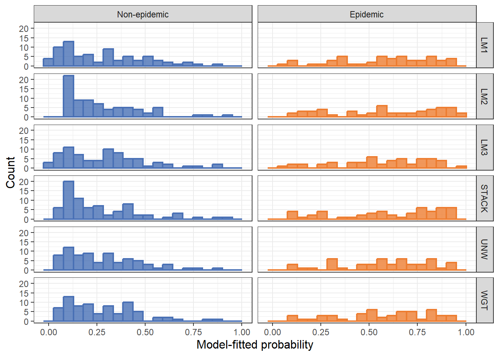
Figure 4:
res <- read.csv("plan/res.csv")
pA <- ggplot(res, aes(pt, NMB_mean)) +
geom_ribbon(aes(ymin = NMB_lo, ymax = NMB_hi), alpha = 0.15, fill = "#4970b5") +
geom_line(size = 1.5, color = "#ED7D31") +
geom_hline(yintercept = 0, linetype = 2, color = "gray60") +
labs(x = expression("Risk threshold (" * italic(p)[italic(t)] * ")"),
y = expression("Mean NMB (USD/ha per decision unit)")) +
theme_bw()+
theme(
axis.title.y = element_text(size = 14),
axis.title.x = element_text(size = 14),
axis.text.x = element_text(size = 10),
axis.text.y = element_text(size = 10)
)
pB <- ggplot(res, aes(pt, Pr_pos)) +
annotate("rect", ymin = 0.5, ymax = 0.8, xmin = -Inf, xmax = Inf,
fill = "#4970b5", alpha = 0.2)+
geom_line(size = 1.5, , color = "#ED7D31") +
geom_hline(yintercept = 0.5, linetype = 2, color = "gray60") +
geom_hline(yintercept = 0.8, linetype = 2, color = "gray60") +
scale_y_continuous(labels = scales::percent_format(accuracy = 1), limits = c(0,1)) +
labs(x = expression("Risk threshold (" * italic(p)[italic(t)] * ")"),
y = "Probability of NMB > 0") +
theme_bw()+
theme(
axis.title.y = element_text(size = 14),
axis.title.x = element_text(size = 14),
axis.text.x = element_text(size = 10),
axis.text.y = element_text(size = 10)
)
(pA | pB)+
plot_annotation(tag_levels = "A")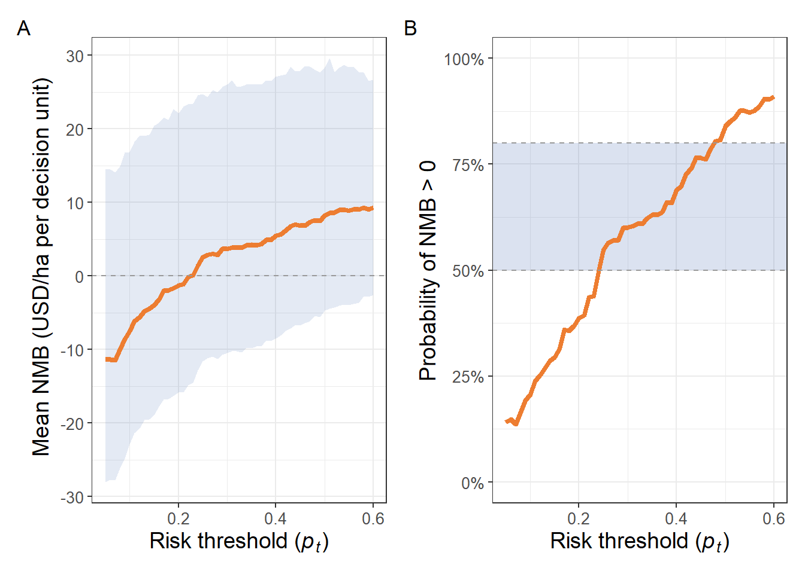
ggsave("imagem_NMB.png", dpi = 300, bg = "white", width = 11, height = 6)Figure Supplementar 1:
# Set up datadist for rms
dd <- datadist(df_predictors)
options(datadist = "dd")models <- list(
model1 = lrm(factor(epidemic) ~ tmin + rcs(rh, 4), data = df_predictors, x = TRUE, y = TRUE),
model2 = lrm(factor(epidemic) ~ rcs(rh, 4) + rcs(dew, 3), data = df_predictors, x = TRUE, y = TRUE),
model3 = lrm(factor(epidemic) ~ tmin + prec2, data = df_predictors, x = TRUE, y = TRUE)
)
# Predictive plot
pred_obj <- Predict(models$model1, fun = plogis, conf.int = 0.95)
# Converte em data.frame
pred_df <- as.data.frame(pred_obj)
pred_df_tmin <- pred_df |>
filter(.predictor. == "tmin")
pred_df_rh <- pred_df |>
filter(.predictor. == "rh")
tmin_spline <- ggplot(pred_df_tmin, aes(x = tmin, y = yhat)) +
geom_ribbon(aes(ymin = lower, ymax = upper), alpha = 0.15, fill = "#4970b5") +
geom_line(color = "#ed7d31", linewidth = 1.5) +
labs(x = "Tmin<sub>2_10</sub> (°C)", y = "Predicted Probability") +
theme_bw()+
theme(
axis.title.x = element_markdown(size = 12), # enable Markdown in Y-axis label
axis.title.y = element_text(size = 12),
axis.text.x = element_text(size = 9),
axis.text.y = element_text(size = 9)
)+
scale_y_continuous(limits = c(0.00, 1.00), breaks = breaks_width(0.25))
rh_spline <- ggplot(pred_df_rh, aes(x = rh, y = yhat)) +
geom_ribbon(aes(ymin = lower, ymax = upper), alpha = 0.15, fill = "#4970b5") +
geom_line(color = "#ed7d31", linewidth = 1.5) +
labs(x = "RH<sub>5_10</sub> (%)", y = "Predicted Probability") +
theme_bw()+
theme(
axis.title.x = element_markdown(size = 12), # enable Markdown in Y-axis label
axis.title.y = element_text(size = 12),
axis.text.x = element_text(size = 9),
axis.text.y = element_text(size = 9)
)+
scale_y_continuous(limits = c(0.00, 1.00), breaks = breaks_width(0.25))
tmin_spline | rh_spline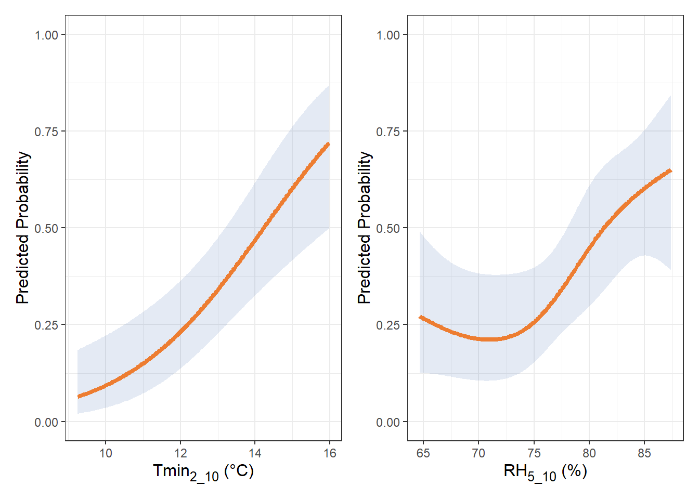
# Predictive plot
pred_obj2 <- Predict(models$model2, fun = plogis, conf.int = 0.95)
# Converte em data.frame
pred_df2 <- as.data.frame(pred_obj2)
pred_df_dew <- pred_df2 |>
filter(.predictor. == "dew")
pred_df2_rh <- pred_df2 |>
filter(.predictor. == "rh")
tdew_spline <- ggplot(pred_df_dew, aes(x = dew, y = yhat)) +
geom_ribbon(aes(ymin = lower, ymax = upper), alpha = 0.15, fill = "#4970b5") +
geom_line(color = "#ed7d31", linewidth = 1.5) +
labs(x = "Tdew<sub>4_10</sub> (°C)", y = "Predicted Probability") +
theme_bw()+
theme(
axis.title.x = element_markdown(size = 12), # enable Markdown in Y-axis label
axis.title.y = element_text(size = 12),
axis.text.x = element_text(size = 9),
axis.text.y = element_text(size = 9)
)+
scale_y_continuous(limits = c(0.00, 1.00), breaks = breaks_width(0.25))
rh2_spline <- ggplot(pred_df2_rh, aes(x = rh, y = yhat)) +
geom_ribbon(aes(ymin = lower, ymax = upper), alpha = 0.15, fill = "#4970b5") +
geom_line(color = "#ed7d31", linewidth = 1.5) +
labs(x = "RH<sub>5_10</sub> (%)", y = "Predicted Probability") +
theme_bw()+
theme(
axis.title.x = element_markdown(size = 12), # enable Markdown in Y-axis label
axis.title.y = element_text(size = 12),
axis.text.x = element_text(size = 9),
axis.text.y = element_text(size = 9)
)+
scale_y_continuous(limits = c(0.00, 1.00), breaks = breaks_width(0.25))
tdew_spline | rh2_spline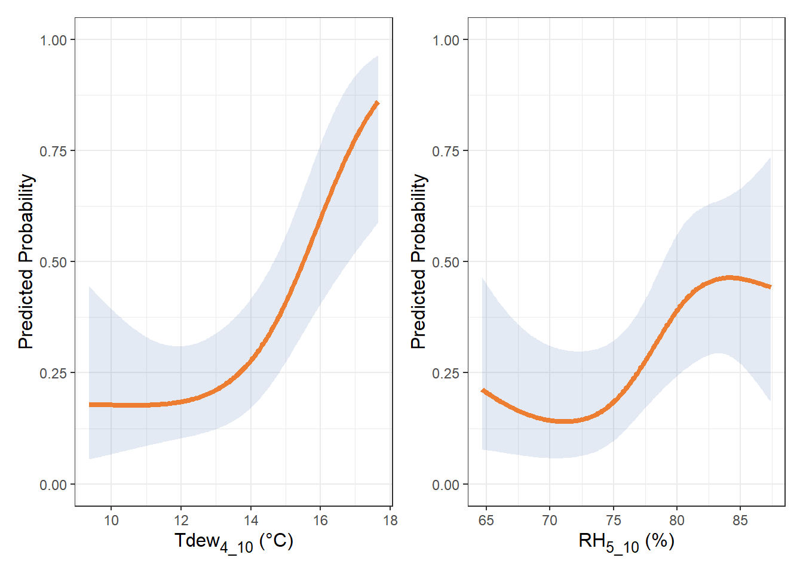
pred_obj3 <- Predict(models$model3, fun = plogis, conf.int = 0.95)
# Converte em data.frame
pred_df3 <- as.data.frame(pred_obj3)
pred_df_rain <- pred_df3 |>
filter(.predictor. == "prec2")
pred_df3_tmin <- pred_df3 |>
filter(.predictor. == "tmin")
prec_spline <- ggplot(pred_df_rain, aes(x = prec2, y = yhat)) +
geom_ribbon(aes(ymin = lower, ymax = upper), alpha = 0.15, fill = "#4970b5") +
geom_line(color = "#ed7d31", size = 1.5) +
labs(x = "PREC<sub>6_10</sub> (mm)", y = "Predicted Probability") +
theme_bw()+
theme(
axis.title.x = element_markdown(size = 12), # enable Markdown in Y-axis label
axis.title.y = element_text(size = 12),
axis.text.x = element_text(size = 9),
axis.text.y = element_text(size = 9)
)+
scale_y_continuous(limits = c(0.00, 1.00), breaks = breaks_width(0.25))+
scale_x_continuous(breaks = pretty_breaks(n = 5))
tmin3_spline <- ggplot(pred_df3_tmin, aes(x = tmin, y = yhat)) +
geom_ribbon(aes(ymin = lower, ymax = upper), alpha = 0.15, fill = "#4970b5") +
geom_line(color = "#ed7d31", size = 1.5) +
labs(x = "Tmin<sub>2_10</sub> (°C)", y = "Predicted Probability") +
theme_bw()+
theme(
axis.title.x = element_markdown(size = 12), # enable Markdown in Y-axis label
axis.title.y = element_text(size = 12),
axis.text.x = element_text(size = 9),
axis.text.y = element_text(size = 9)
)+
scale_y_continuous(limits = c(0.00, 1.00), breaks = breaks_width(0.25))+
scale_x_continuous(breaks = pretty_breaks(n = 5))
prec_spline | tmin3_spline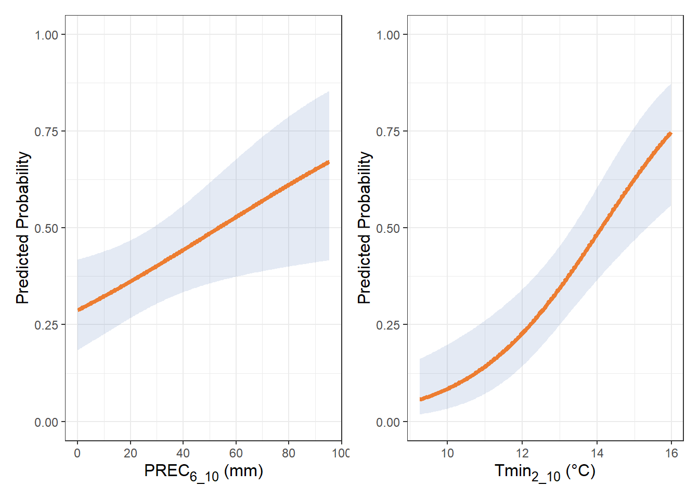
(tmin_spline | rh_spline) /
(rh2_spline | tdew_spline) /
(tmin3_spline | prec_spline) +
plot_annotation(tag_levels = "A")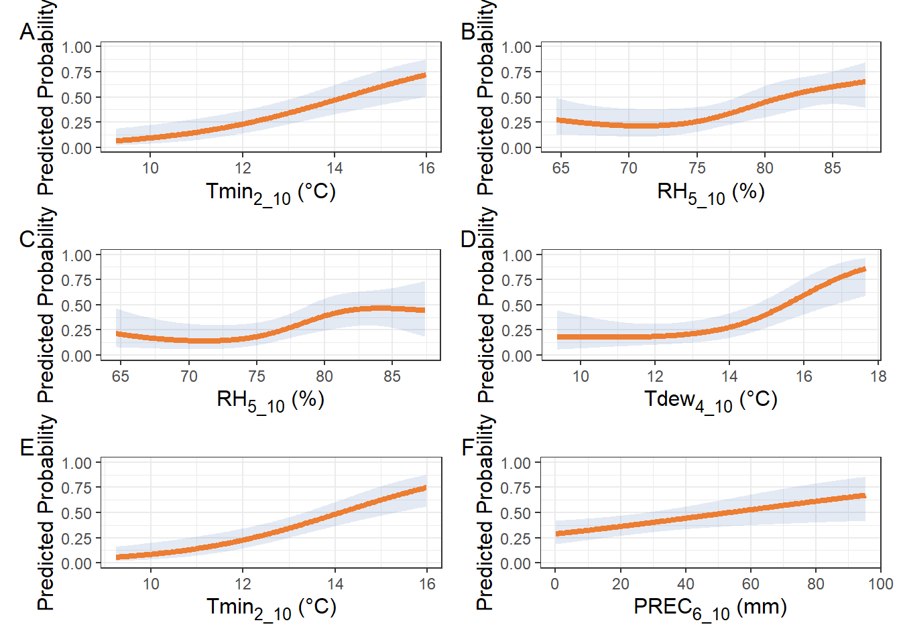
Figure Supplementar 2:
pD1 <- ggplot(res, aes(pt, NMB_trat_mean)) +
geom_line(size = 1.5, color = "#ED7D31") +
geom_hline(yintercept = 0, linetype = 2, color = "gray60") +
labs(x = expression("Risk threshold (" * italic(p)[italic(t)] * ")"),
y = "NMB per treated unit (USD/ha)") +
theme_bw()+
theme(
axis.title.y = element_text(size = 14),
axis.title.x = element_text(size = 14),
axis.text.x = element_text(size = 10),
axis.text.y = element_text(size = 10)
)
pD2 <- ggplot(res, aes(pt, PPV)) +
geom_ribbon(aes(ymin = PPV_req_lo, ymax = PPV_req_hi), alpha = 0.15, fill = "#4970b5") +
geom_line(size = 1.5, color = "#ED7D31") +
geom_line(aes(y = PPV_req_med), linetype = 2, color = "gray60") +
scale_y_continuous(limits = c(0,1), labels = scales::percent) +
labs(x = expression("Risk threshold (" * italic(p)[italic(t)] * ")"),
y = "Observed PPV vs. required PPV (C/B)") +
theme_bw()+
theme(
axis.title.y = element_text(size = 14),
axis.title.x = element_text(size = 14),
axis.text.x = element_text(size = 10),
axis.text.y = element_text(size = 10)
)
(pD1 | pD2)+
plot_annotation(tag_levels = "A")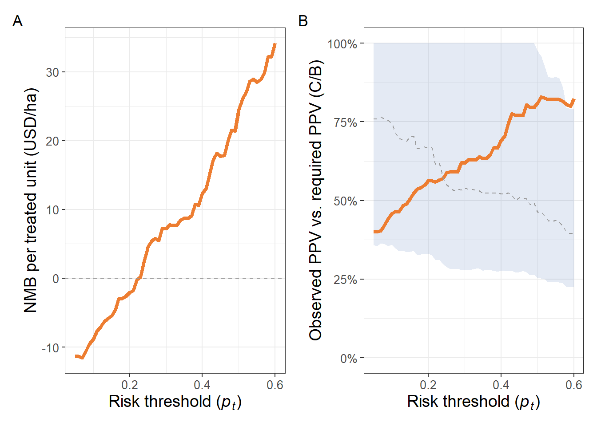
Figure Supplementar:
table <- gsheet2tbl("https://docs.google.com/spreadsheets/d/1MBiKsosQ8Hob6LkS65_1pPU25hx1CO9i42Sm_xf28ww/edit?gid=0#gid=0") |>
dplyr::select(study, year, location, state, lat, lon, planting_date, cultivar, index, daa_mean, flowering) |>
filter(study %in% 1:101)table |>
ggplot(aes(location, daa_mean))+
geom_boxplot(color = "#ed7d31",linewidth = 0.9)+
labs(y = "Days until anthesis", x = "Trial location")+
theme_bw()+
theme(
axis.title.y = element_markdown(size = 12), # enable Markdown in Y-axis label
axis.title.x = element_text(size = 12),
legend.position = "none",
axis.text.x = element_text(size = 9),
axis.text.y = element_text(size = 9)
)+
scale_y_continuous(n.breaks = 6)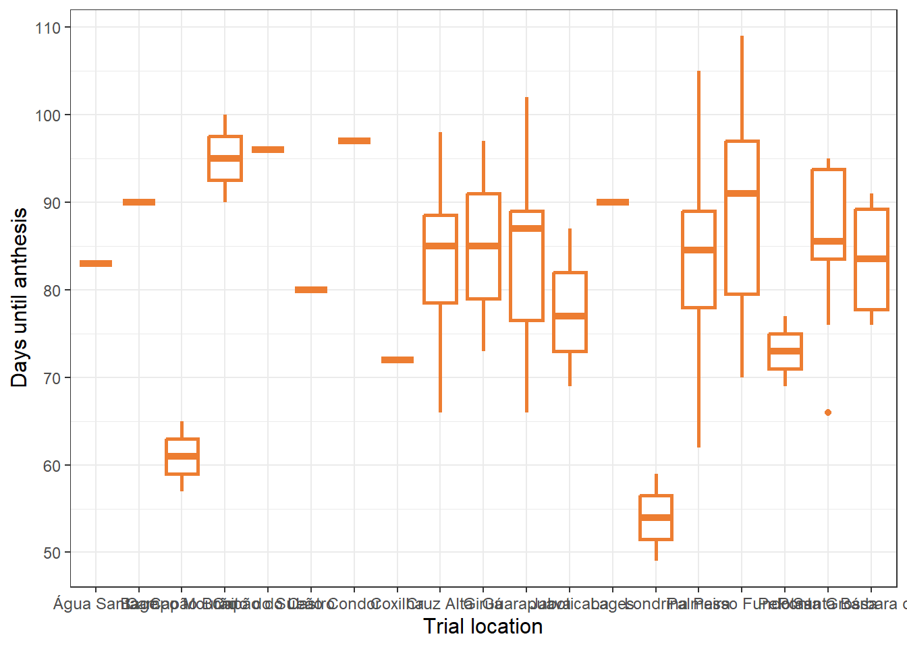
table |>
ggplot(aes(daa_mean, location))+
geom_boxplot(color = "#ed7d31",linewidth = 0.9)+
labs(y = "Trial location", x = "Days until anthesis")+
theme_bw()+
theme(
axis.title.y = element_markdown(size = 12), # enable Markdown in Y-axis label
axis.title.x = element_text(size = 12),
legend.position = "none",
axis.text.x = element_text(size = 9),
axis.text.y = element_text(size = 9)
)+
scale_x_continuous(n.breaks = 6)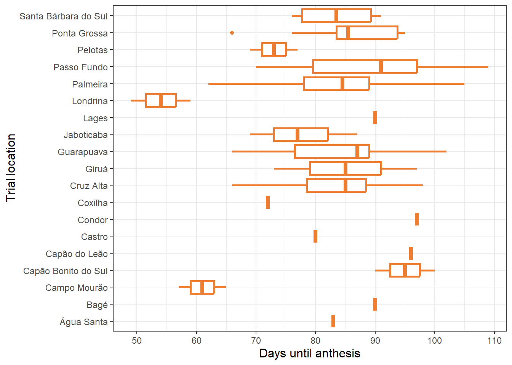
Figure Supplementar:
table <- gsheet2tbl("https://docs.google.com/spreadsheets/d/1MBiKsosQ8Hob6LkS65_1pPU25hx1CO9i42Sm_xf28ww/edit?gid=0#gid=0") |>
dplyr::select(study, year, location, state, lat, lon, planting_date, cultivar, index, daa_mean, flowering) |>
mutate(epidemic = if_else(index >= 10, 1, 0)) |>
filter(study %in% 1:125,
epidemic == 1)
table |>
ggplot(aes(x = index)) +
geom_histogram(bins = 15, linewidth = 0.8, alpha = 0.8, position = "identity", color = "#ed7d31", fill = "#ed7d31")+
labs(x = "FHB index",
y = "Count")+
theme_bw() +
theme(
axis.title.y = element_text(size = 12),
axis.title.x = element_text(size = 12),
legend.position = "none",
axis.text.x = element_text(size = 9),
axis.text.y = element_text(size = 9)
)+
scale_y_continuous(labels = number_format(accuracy = 1)) +
scale_x_continuous(labels = number_format(accuracy = 0.1),
breaks = seq(10, 100, 15))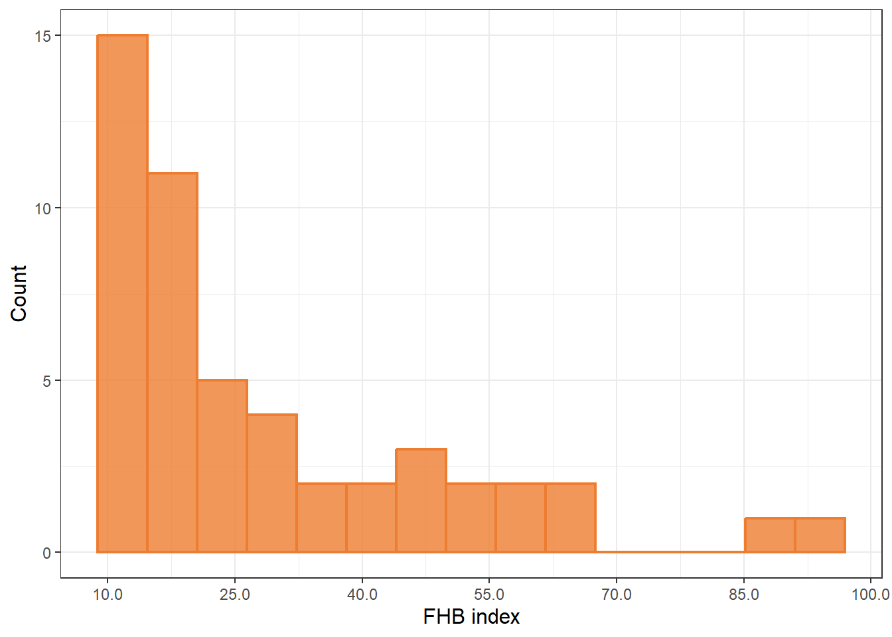